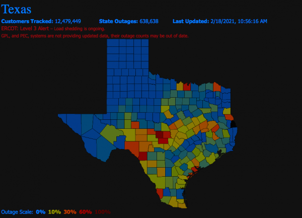

Quick Facts
• Texas is experiencing snow in all counties for the first time in 126 years
• The number of power outages reporting during the storm's peak is about 4.3 million
• 90% of Texas' power grid is operated by ERCOT
• At least 22 people in Texas died in connection to the storm
• 8.8 million Texans still under boil water notices
